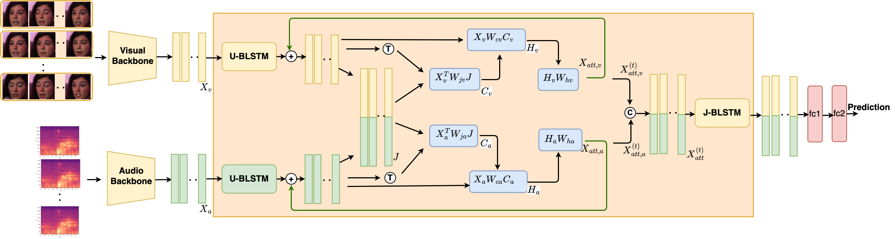

|
I am a post-doctoral researcher at the Computer Research Institute of Montreal (CRIM), working on audio-visual learning for person verification and emotion recognition. I did PhD in artificial intelligence (focused on computer vision and affective computing) at LIVIA lab, ETS Montreal, Canada under the supervision of Prof. Eric Granger and Prof. Patrick Cardinal in 2023. In my thesis, I have worked on developing weakly supervised learning (multiple instance learning) models for facial expression recognition in videos and novel attention models for audio-visual fusion in dimensional emotion recognition. Before my PhD, I had 5 years of industrial research experience in computer vision, working for giant companies as well as start-ups including Samsung Research India, Synechron India and upGradCampus India. I also had the privilege of working with Prof. R. Venkatesh Babu at Indian Institute of Science, Bangalore on crowd flow analysis in videos. I did my Masters at Indian Institute of Technology Guwahati under the supervision of Prof. Kannan Karthik in 2012. I like to play rhythm instruments in my free time. I also prefer to read books and occasionally do blogging. Here is the collection of my musings. I am actively looking for research opportunities in both industry and academia Email / CV / Google Scholar / Twitter / ResearchGate / Github / LinkedIn |
{kind=link}
|
|

|
||||
| IITG 2010-2013 |
IISc 2013 |
Samsung Research 2014-2015 |
ETS 2018-2023 |
CRIM 2023-present |
I'm interested in computer vision, affective computing, deep learning, and multimodal video understanding models. Most of my research revolves around video analytics, weakly supervised learning, facial behavior analysis, and multimodal (audio-visual) learning. I have published more than 20 papers at leading conferences and journals in machine learning and computer vision, including ICASSP, ICIP, ICME, FG, BMVC, CVPR, NeurIPS, TBIOM, and JSTSP with more than 400 citations on Google Scholar. Selected publications of my work can be found below. Representative papers are highlighted. |
|
R Gnana Praveen, Jahangir Alam ICASSP2025 NeurIPS2024 Workshop on Efficient Natural Language and Speech Processing Code In this work, we explored the prospect of adapting large pretrained Vision transformers for audio-visual speaker verification in a parameter efficient-manner with low computational complexity. |
|
R Gnana Praveen, Jahangir Alam IEEE Journal of Special Topics in Signal Processing (JSTSP), 2024 [Impact Factor: 8.7] In this work, we addressed the limitations of cross-atention in handling weak complementary relationships and proposed a novel framework of Incongruity aware cross-attention for effective fusion of audio and visual modalities for dimensional emotion recognition |

|
R Gnana Praveen, Jahangir Alam CVPR2024 Workshop on Affective Behaviour Analysis in-the-Wild Second Place in Valence-Arousal Challenge@CVPR2024 In this work, we introduced recursive fusion of joint cross-attention across audio, visual and text modalities for multimodal dimensional emotion recognition. We participated in the valence-arousal challenge of 6th ABAW competition and achieved second place. |
|
R Gnana Praveen, Jahangir Alam ICME2024 (Oral) Code In this work, we addressed the problem of weak complementary relationships across audio and visual modalities due to sarcastic or conflicting emotions. We address the limitations of cross-attention in handling weak complementary relationships by introducing a novel framework of Dynamic Cross-Attention. |

|
R Gnana Praveen, Jahangir Alam FG2024 In this work, we addressed the problem of weak complementary relationships for effective audio-visual fusion for person verification using dynamic cross-attention. |

|
R Gnana Praveen, Jahangir Alam FG2024 (Selected as one of the best reviewed papers) NeurIPS2023 Workshop on Efficient Natural Language and Speech Processing Code Proposed a recursive joint cross-attention model for effective audio-visual fusion for person verification using recursive attention across audio and visual modalities in the videos. |
|  |
R Gnana Praveen, Patrick Cardinal, Eric Granger ICASSP2023 (Oral) Code Proposed a recursive joint cross-attention model for effective fusion of audio and visual modalities by focusing on leveraging the intra-modal relationships using LSTMs and inter-modal relationships using recursive attention across audio and visual modalities in the video. |

|
R Gnana Praveen, Patrick Cardinal, Eric Granger IEEE Tran. on Biometrics, Behavior, and Identity Science (TBIOM), 2024 Best of FG2021 Featured in March issue of IEEE Biometrics Newsletter Code Investigated the prospect of leveraging both intra and inter-modal relationships using joint cross-attentional audio-visual fusion. The robustness of the proposed model is further validated for missing audio modality along with interpretability analysis. |

|
R Gnana Praveen, Wheidima Carneiro de Melo, Nasib Ullah, Haseeb Aslam, Osama Zeeshan, Théo Denorme, Marco Pedersoli, Alessandro L. Koerich, Simon Bacon, Patrick Cardinal, Eric Granger CVPR2022 Workshop on Affective Behaviour Analysis in-the-Wild (Oral) Code / arXiv / Slides Proposed a joint cross-attention model for effective fusion of audio and visual modalities by focusing on leveraging the intra and inter-modal relationships across audio and visual modalities in the video. |

|
R Gnana Praveen, Eric Granger, Patrick Cardinal FG2021 (Oral) Selected as one of the best reviewed papers Code / arXiv / Video Presentation / Slides / Poster Proposed a cross-attentional model to leverage the intermodal characteristics across audio and visual modalities for effective audio-visual fusion. |

|
Madhu Kiran, R Gnana Praveen, Le Thanh Nguyen-Meidine, Soufiane Belharbi, Louis-Antoine Blais-Morin, Eric Granger BMVC2021 (Oral) Code / arXiv Proposed a Holistic Guidance (HG) method that relies on holistic (or non-occluded) data and its distribution in dissimilarity space to train on occluded datasets without the need of any external source. |

|
R Gnana Praveen, Eric Granger, Patrick Cardinal Image and Vision Computing (IVC), 2021 [Impact Factor: 4.7] Code / arXiv Proposed a deep learning model for weakly-supervised Domain Adaptation with ordinal regression using coarse sequence level labels of videos. In particular, we have enforced ordinal relationship in the proposed model using gaussian distribution. |
|
R Gnana Praveen, Eric Granger, Patrick Cardinal IEEE Tran. on Affective Computing (Submitted), 2021 In this paper, we have presented a comprehensive taxonomy of weakly supervised learning models for facial behavior analysis along with its challenges and potential research directions. |
|
|
R Gnana Praveen, Eric Granger, Patrick Cardinal FG2020 arXiv / Video Presentation / Slides In this paper, we have proposed a novel framework of weakly supervised domain adaptation (WSDA) with limited sequence-level labels for pain localization in videos. |
|

|
Sovan Biswas, R Gnana Praveen, R. Venkatesh Babu ICIP2014 In this paper, we have proposed a simple yet robust novel approach for the segmentation of high-density crowd flows based on super-pixels in H.264 compressed videos. |
|
Source taken from here |